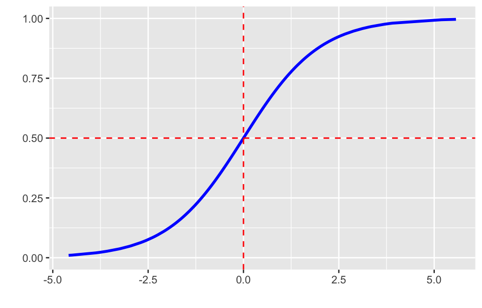
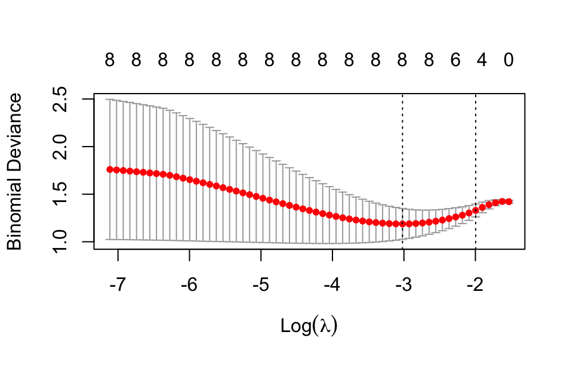

Logistic regression is a type of regression analysis used for prediction of outcome based on one or more predictor variables. It is particularly useful when the dependent variable is binary (i.e., it takes on only two values, such as success/failure or yes/no). Its application is crucial in epidemiology, clinical research, and public health studies.
where P is the probability of the event occurring (e.g., the probability of success) given the independent features X, \beta_0 is the intercept, and \beta_1, \dots, \beta_n are the regression coefficients for the independent X_1, X_2, \dots, X_n. This formula indicates the probability of an event occurring based on the input features X.
Here is a plot of the logistic function:

The plot of the logistic function has an S-shaped or sigmoid curve, the output probabilities range between 0 and 1.
The model can be transformed to a linear form as follows:
where \frac{P}{1-P} is the odds of the event occurring, \text{logit}(P) is the natural logarithm of the odds.
19.2.2 Model parameters
In logistic regression, the parameters mainly signify how the independent variables relate to the dependent variable (outcome) in terms of probability. Below are the primary meanings and interpretations of the parameters in a logistic regression model:
The intercept (β_0) represents the predicted log odds when all independent variables are equal to zero. It provides the baseline probability of the outcome. If the values of independent variables are zero, the intercept determines the initial output probability.
Each coefficient represents the effect of the corresponding independent variable on the log odds of the dependent variable. Positive coefficient indicates that an increase in this variable raises the log odds of the event occurring, thereby increasing its probability. Negative coefficient suggests that an increase in this variable lowers the log odds of the event occurring, thereby decreasing its probability. The larger the absolute value of the coefficient, the more significant the independent variable’s effect on the outcome.
Parameter estimation
In logistic regression, parameter estimation is used to determine the relationship between independent variables (features) and dependent variables (usually binary outcomes). Maximum likelihood estimation (MLE) is the standard method for estimating parameters in logistic regression. MLE estimates model parameters by maximizing the likelihood function, which makes the observed data most probable under the model.
For each observation i, if Y_i is the binary response variable, the likelihood function can be written as:
where P_i = \frac{1}{1 + e^{-(\beta_0 + \beta_1 X_{1i} + … + \beta_k X_{ki})}}. To simplify the calculations, the log-likelihood function is often used:
In logistic regression, odds ratio (OR) is a key measure that quantifies the strength of association between a independent variable and the outcome of interest. The OR compares the odds of the event occurring in one group to the odds of the event occurring in another group. To get the OR, we exponentiate the coefficient:
\text{OR} = e^{\beta_j}
The OR representing how the odds of the event change with a one-unit increase in the independent variable X_j.
OR > 1: Suggests that increasing the variable by one unit increases the odds of the event.
OR < 1: Indicates that increasing the variable by one unit decreases the odds of the event.
OR = 1: Implies no effect of the variable on the odds of the event.
It is common to calculate confidence intervals for the OR to assess the precision of the estimate. A 95% confidence interval for the OR that does not include 1 suggests a statistically significant association.
19.2.3 Hypothesis test
Each parameter typically undergoes hypothesis testing to determine its significance in the model. The Wald test and the likelihood ratio test are two commonly used statistical tests for assessing the significance of parameters in regression models, including logistic regression.
Wald Test
The Wald test evaluates the significance of individual coefficients in a regression model. It tests the null hypothesis that a specific parameter (coefficient) is equal to zero (no effect). For a coefficient \beta_j:
W = \frac{\hat{\beta_j}^2}{S_{\hat{\beta_j}}}
where \hat{\beta} is the estimated coefficient, S_{\hat{\beta_j}} is the estimated variance of the coefficient.
The Wald statistic follows a chi-squared distribution with 1 degree of freedom under the null hypothesis. A large Wald statistic indicates that the coefficient is significantly different from zero, leading to rejection of the null hypothesis.
The Wald test can be unreliable in small samples or when the estimates are near the boundary of the parameter space, as it may lead to inflated type I error rates.
Likelihood ratio test
The likelihood ratio test compares the fit of two models: a full model (with the parameter of interest) and a reduced model (without the parameter). It tests whether the additional parameters improve the model fit significantly. The statistic is calculated as:
G = 2 \cdot \left(\log L_{\text{full}} - \log L_{\text{reduced}} \right)
where L_{\text{full}} is the likelihood of the reduced model, L_{\text{reduced}} is the likelihood of the full model. The G statistic follows a chi-squared distribution, with degrees of freedom equal to the difference in the number of parameters between the full and reduced models. A large G statistic suggests that the full model significantly improves the fit compared to the reduced model, leading to rejection of the null hypothesis that the additional parameters do not improve the model. The likelihood ratio test is more reliable than the Wald test in small samples and can be used for more complex models where multiple parameters are tested simultaneously.
P-value are used to assess the significance of parameters. If the P-value is below a significance level (e.g., 0.05), the independent variable is considered to have a significant effect on the dependent variable.
Example 1:
Here is the data on a case-control study investigating the relationship between smoking, alcohol consumption, and esophageal cancer. Conduct a logistic regression analysis.
Logistic regression can be performed using the glm() function. Here’s an example code:
model <-glm(formula = y ~ x1 + x2, family =binomial(link ="logit"),data = df,weights = freq)
Use summary(model) to display a detailed summary of the fitted model:
summary(model)
#>
#> Call:
#> glm(formula = y ~ x1 + x2, family = binomial(link = "logit"),
#> data = df, weights = freq)
#>
#> Coefficients:
#> Estimate Std. Error z value Pr(>|z|)
#> (Intercept) -0.9099 0.1358 -6.699 2.10e-11 ***
#> x11 0.8856 0.1500 5.904 3.54e-09 ***
#> x21 0.5261 0.1572 3.348 0.000815 ***
#> ---
#> Signif. codes: 0 '***' 0.001 '**' 0.01 '*' 0.05 '.' 0.1 ' ' 1
#>
#> (Dispersion parameter for binomial family taken to be 1)
#>
#> Null deviance: 1228.0 on 7 degrees of freedom
#> Residual deviance: 1159.4 on 5 degrees of freedom
#> AIC: 1165.4
#>
#> Number of Fisher Scoring iterations: 4
In the summary output of glm(), the columns labeled “z value” and “Pr(>|z|)” represent the results of the Wald test. The results show that both independent variables (X1 and X2) are significant in the logistic regression model, showing a strong relationship with the outcome variable. The model fits the data well, as indicated by the reduction in deviance from the null model.
The regression equation can be extracted from the model by extract_eq() function from equatiomatic package.
The odds ratios are the exponentiated coefficients from the logistic regression model, since logistic regression models the log-odds (logarithm of the odds). To get the odds ratios, you can use the exp() function on the coefficients.
You can use the confint() function to compute confidence intervals for the model coefficients. To get confidence intervals for the odds ratios, you need to exponentiate the confidence intervals of the log-odds.
In logistic regression, like any regression model, variable selection is the process of choosing the most relevant independent variables for the model. This step is crucial because including too many irrelevant variables can lead to overfitting, making the model less generalizable to new data. On the other hand, excluding important variables can result in biased estimates.
Example 2:
To investigate the risk factors for coronary heart disease, a case-control study was conducted with 26 coronary heart disease patients and 28 controls. The description of each factor are shown in Table 19.1 . Logistic stepwise regression analysis was performed to screen for risk factors.
Here are common methods used for variable selection in logistic regression:
Stepwise selection
Stepwise selection involves adding or removing variables based on specific criteria, usually involving p-values or AIC. This can be done using the step() function:
model_full <-glm( y ~ x1 + x2 + x3 + x4 + x5 + x6 + x7 + x8,binomial(link ="logit"),data = df)step(model_full, direction ="both", trace =0, k =2)
The k argument in the step() function is used to specify the penalty per parameter that is added to the model when performing model selection. This penalty influences the criteria for including or excluding variables during the stepwise regression process. When k = 2, this corresponds to the AIC selection, which is common for model selection. When k = log(n), it corresponds to the BIC selection, which imposes a stronger penalty for additional parameters, often leading to simpler models.
Alternatively, stepwise() function from StepReg package is another useful and convenient tool to select a optimal model using various stepwise regression strategies.
#> Table 1. Summary of arguments for model selection
#> ‗‗‗‗‗‗‗‗‗‗‗‗‗‗‗‗‗‗‗‗‗‗‗‗‗‗‗‗‗‗‗‗‗‗‗‗‗‗‗‗‗‗‗‗‗
#> Parameter Value
#> —————————————————————————————————————————————
#> included variable NULL
#> strategy bidirection
#> metric SBC
#> tolerance of multicollinearity 1e-07
#> multicollinearity variable NULL
#> intercept 1
#> ‗‗‗‗‗‗‗‗‗‗‗‗‗‗‗‗‗‗‗‗‗‗‗‗‗‗‗‗‗‗‗‗‗‗‗‗‗‗‗‗‗‗‗‗‗
#>
#> Table 2. Summary of variables in dataset
#> ‗‗‗‗‗‗‗‗‗‗‗‗‗‗‗‗‗‗‗‗‗‗‗‗‗‗‗‗‗‗‗‗‗‗‗‗‗‗‗‗‗‗‗‗‗‗
#> Variable_type Variable_name Variable_class
#> ——————————————————————————————————————————————
#> Dependent y factor
#> Independent x1 numeric
#> Independent x2 numeric
#> Independent x3 numeric
#> Independent x4 numeric
#> Independent x5 numeric
#> Independent x6 numeric
#> Independent x7 numeric
#> Independent x8 numeric
#> ‗‗‗‗‗‗‗‗‗‗‗‗‗‗‗‗‗‗‗‗‗‗‗‗‗‗‗‗‗‗‗‗‗‗‗‗‗‗‗‗‗‗‗‗‗‗
#>
#> Table 3. Summary of selection process under bidirection with SBC
#> ‗‗‗‗‗‗‗‗‗‗‗‗‗‗‗‗‗‗‗‗‗‗‗‗‗‗‗‗‗‗‗‗‗‗‗‗‗‗‗‗‗‗‗‗‗‗‗‗‗‗‗‗‗‗‗‗‗‗‗‗
#> Step EffectEntered EffectRemoved NumberParams SBC
#> ————————————————————————————————————————————————————————————
#> 1 1 1 78.77479
#> 2 x6 2 71.44514
#> 3 x5 3 67.44722
#> 4 x8 4 66.35821
#> 5 x1 5 66.16941
#> ‗‗‗‗‗‗‗‗‗‗‗‗‗‗‗‗‗‗‗‗‗‗‗‗‗‗‗‗‗‗‗‗‗‗‗‗‗‗‗‗‗‗‗‗‗‗‗‗‗‗‗‗‗‗‗‗‗‗‗‗
#>
#> Table 4. Summary of coefficients for the selected model with y under bidirection and SBC
#> ‗‗‗‗‗‗‗‗‗‗‗‗‗‗‗‗‗‗‗‗‗‗‗‗‗‗‗‗‗‗‗‗‗‗‗‗‗‗‗‗‗‗‗‗‗‗‗‗‗‗‗‗‗‗‗
#> Variable Estimate Std. Error z value Pr(>|z|)
#> ———————————————————————————————————————————————————————
#> (Intercept) -4.70502 1.54324 -3.04879 0.0023
#> x6 3.13549 1.24888 2.51065 0.01205
#> x5 1.49594 0.74389 2.01097 0.04433
#> x8 1.94709 0.84661 2.29986 0.02146
#> x1 0.9239 0.47657 1.93864 0.05255
#> ‗‗‗‗‗‗‗‗‗‗‗‗‗‗‗‗‗‗‗‗‗‗‗‗‗‗‗‗‗‗‗‗‗‗‗‗‗‗‗‗‗‗‗‗‗‗‗‗‗‗‗‗‗‗‗
Stepwise methods can sometimes lead to overfitting, especially if the dataset is small. It may be slower for larger models or datasets compared to penalized regression methods like Lasso.
LASSO
LASSO (least absolute shrinkage and selection operator) is a regularization technique that performs both variable selection and regularization by adding a penalty term to the logistic regression model. It forces some of the coefficients to be exactly zero. Variables with coefficients set to zero are effectively excluded from the model, while variables with non-zero coefficients are selected as important.
You can use the glmnet package for LASSO. Here is an example code block:
x =select(df, contains("x")) |>as.matrix()y =select(df, y) |>pull()# Select the optimal lambda using cross-validationcv_model <-cv.glmnet(x, y, family ="binomial", alpha =1)plot(cv_model)best_lambda <- cv_model$lambda.min

The elasticnet mixing parameter, with 0 ≤ \alpha ≤ 1. \alpha=1 is the lasso penalty, and \alpha=0 the ridge penalty. If \alpha is between 0 and 1, it would be Elastic Net, a combination of Lasso and Ridge regression.
Since Lasso tends to set some coefficients exactly to zero, using optimal lambda ensures that only the most relevant features are kept in the model. The final model will have the lowest cross-validation error, making it more reliable for prediction and interpretation.
lasso_model <-glmnet(x, y, family ="binomial", alpha =1, lambda = best_lambda)
After fitting the final model with the optimal lambda, you can check which variables have non-zero coefficients.
When the regularization parameter (lambda) is very small, the Lasso penalty is not strong enough to shrink coefficients to zero. This could result in all variables being retained in the model. To address the reason and potentially shrink more coefficients to zero, you can try the following:
lambda_strong <- cv_model$lambda.1selasso_model <-glmnet(x, y, family ="binomial", alpha =1, lambda = lambda_strong)
1
The largest lambda within 1 standard error of the best.
The lambda.min value minimizes the cross-validation error. The lambda.1se is more conservative and applies a larger penalty, often shrinking more coefficients to zero. After refitting the model with a higher lambda, you can check the coefficients to see if any are zero:
You can try a larger value for lambda (manually increasing the penalty):
stronger_lambda <- best_lambda *3.1# Increase lambda by a factor of 3.1lasso_model <-glmnet(x, y, family ="binomial", alpha =1, lambda = stronger_lambda)coef(lasso_model)
Lasso or Ridge regression both can constrain the regression coefficients to prevent overfitting. Moreover, Ridge regression does not perform variable selection, but rather shrinks all features to some degree. Although it retains all the variables, but it can help deal with multicollinearity problems.
19.3 Conditional logistic regression
Conditional logistic regression is used when dealing with matched case-control studies where subjects (cases and controls) are matched based on certain characteristics, like age, sex, or other variables. Unlike standard logistic regression, conditional logistic regression takes into account the matching by estimating the relationship between predictors and outcomes within matched sets.
In conditional logistic regression, the model is stratified by the matched sets (e.g., matched pairs or groups), meaning the analysis is performed within these groups.
The conditional logistic regression model takes the following form:
where Y_{ij} is the response variable for the j-th individual in the i-th group, X_{ij_1}, X_{ij_2}, \dots, X_{ij_p} are the predictors, and \beta_1, \beta_2, \dots, \beta_p are the corresponding coefficients. The intercept is often omitted because the matching or stratification controls for differences between groups, or say it is conditioned out as part of the model’s structure when using the conditional likelihood function.
In conditional logistic regression, the parameter estimation focuses on the effects of the explanatory variables on the odds of the outcome, while controlling for the matching or stratification. It uses a conditional likelihood approach to estimate parameters, which removes the effect of unmeasured confounders that are constant within strata.
Consider n paired observations, where each paired observation i includes two individuals i_1 and i_2, with i_1 representing the observed success and i_2 representing the observed failure. The conditional likelihood function can be expressed as:
where X_{i_1} and X_{i_2} are the vectors of independent variables for the two individuals in the matched pair, \beta is the vector of coefficients you aim to estimate, \exp(X_{i}^\top \beta) represents the linear predictor component in the logistic regression model.
Example 3:
To investigate the risk factors associated with laryngeal cancer in a northern city, a 1:2 matched case-control study was conducted. Six potential risk factors were selected, and data from 25 matched pairs were extracted. The descriptions for the variable assignments are provided in Table 19.2 . Please perform a conditional logistic stepwise regression analysis.
To perform a conditional logistic stepwise regression analysis, you can use the survival package, which provides functions for conditional logistic regression. Here is an example code block:
Significant variables in the final model include X_2, X_3, X_4, and X_6, while X_1 and X_5 is not significant.
19.4 Ordinal logistic regression
Ordinal logistic regression is used when the dependent variable is ordinal, meaning it represents categories with a meaningful order, but the exact distance between the categories is unknown or not equal. It’s commonly used in situations where the outcome variable has more than two categories, and these categories have a natural order (e.g., from low to high).
In ordinal logistic regression, the probability of an observation falling into a given category or lower is modeled as a function of the independent variables. The most commonly used model is the proportional odds model, which assumes that the relationship between each independent variable and the outcome is the same across all category boundaries.
The ordinal logistic regression model estimates the cumulative probabilities of the ordinal outcome. For an outcome Y with K ordered categories, the model is:
where P(Y \leq k|X) is the cumulative probability of the outcome being in category k or lower given independent variable X, P(Y > k|X) is the probability of the outcome being in a category higher than k, \log \left( \frac{P(Y \leq j|X)}{P(Y > j|X)} \right) is the log-odds of being in a category k or lower, \beta_0^* is the intercept for the model that separate the different categories, \beta_p are the regression coefficients associated with the independent variables.
In other words, this model estimates the odds of the outcome falling in category j or lower, compared to falling in a higher category, as a function of the variables.
Example 4:
In order to study the changes in nucleolar organization related to gastric cancer and precancerous lesions, we analyzed the variation in the number and size of silver-staining nucleolar proteins (AgNOR) granules in cases of gastritis, atypical hyperplasia, and gastric cancer, as well as their clinical diagnostic significance. A total of 129 patients were tested. Perform a ordinal logistic regression analysis.
Multinomial logistic regression is used for modeling the relationship between a categorical dependent variable with more than two levels and one or more independent variables. It is an extension of binary logistic regression, which is used when the outcome variable has only two categories.
In the case of K categories (where K ),
For a response variable Y with categories k = 1, 2, \ldots, K, and a set of independent variables X = (X_1, X_2, \ldots, X_p), we typically choose one category as the reference category. The probability of Y being in category k is given by:
\text{logit}(P(Y = k | X)) = \log\left(\frac{P(Y = k | X)}{P(Y = K | X)}\right) = \beta_{0k} + \beta_{1k} X_1 + \beta_{2k} X_2 + \ldots + \beta_{pk} X_p
where P(Y = k | X) is the probability of the dependent variable being in category k, P(Y = K | X) is the probability of the response variable Y being in the reference category K, \beta_{jk} are the coefficients for the j-{\text{th}} independent variable associated with the k-\text{th} category.
Each coefficient in the model represents the change in the log odds of the dependent variable being in a particular category compared to a reference category for a one-unit change in the predictor variable. Odds ratio can be calculated by exponentiating the coefficients, providing a multiplicative effect on the odds of being in one category versus the reference category.
Example 5:
Use the data in Example 4 to perform multinomial logistic regression analysis.
You can perform multinomial logistic regression using the nnet package with the multinom() function:
Ordinal logistic regression (also known as proportional odds logistic regression) assumes that the effect of each predictor variable on the cumulative probabilities (i.e., the odds ratios) is constant across all levels of the response variable. This assumption is known as the proportional odds assumption or parallel lines assumption. Violation of this assumption means that the effect of the predictor variables is not constant across the levels of the response variable, which can affect the validity and interpretability of the model.
To test whether this assumption holds, you can perform a parallel lines test. Here are some methods to test the parallel lines assumption in R for an ordinal logistic regression model:
Brant test The Brant test is one of the most commonly used tests to check the proportional odds assumption. The brant package provides the brant() function for this test.
library(brant)brant(ordinal_model) |>print()
#> --------------------------------------------
#> Test for X2 df probability
#> --------------------------------------------
#> Omnibus 0.41 2 0.82
#> X1 0.16 1 0.69
#> X2 0.03 1 0.87
#> --------------------------------------------
#>
#> H0: Parallel Regression Assumption holds
#> X2 df probability
#> Omnibus 0.40627948 2 0.8161642
#> X1 0.15502241 1 0.6937812
#> X2 0.02667615 1 0.8702599
If the results show that some predictor variables have p-values less than the significance level, it indicates that these variables violate the parallel lines assumption.
Likelihood ratio test Another approach is to compare the ordinal logistic regression model (which assumes parallel lines) to a multinomial logistic regression model (which does not make this assumption). This comparison can be done using a likelihood ratio test. Here we define a function named likelihood_ratio_test() to perform this test:
#> Likelihood ratio test for parallel lines assumption:
#> statistic: 0.4184909
#> df: 2
#> p-value: 0.8111961
#> The parallel lines assumption is held.
If the p-value is small (e.g., less than 0.05), it indicates that the multinomial logistic regression model provides a significantly better fit to the data, and the parallel lines assumption of the ordinal logistic regression model might not hold. If the p-value is large (e.g., greater than 0.05), it suggests that the ordinal logistic regression model is sufficient, and the extra complexity of the multinomial model is not warranted.
If you prefer to use the VGAM package to test the parallel lines assumption, you can follow these steps:
The likelihood ratio test helps determine if the additional flexibility of the multinomial model significantly improves the fit over the ordinal model.
19.6.2 Sample size
The sample size for logistic regression is crucial to ensure the reliability of the model and the statistical significance of its coefficients. Several factors affect the sample size in logistic regression, including the number of variables, expected effect sizes, prevalence of the outcome (for binary logistic regression), and the desired statistical power.
Here’s a guide to understanding how to determine the sample size:
General rule of thumb
A commonly used guideline suggests that for binary logistic regression, you need at least 10 events (outcome occurrences) per independent variable. An “event” refers to cases where the binary outcome of interest occurs (e.g., “1” for success). For example, if you have 5 independent variables and the outcome (e.g., disease occurrence) happens in 30% of the sample, you would need:
\text{Sample size} \geq \frac{10 \times \text{number of predictors}}{\text{proportion of events}} = \frac{10 \times 5}{0.3} \approx 167 \text{ subjects}
This ensures that the model can reliably estimate the coefficients for each predictor.
Sample size for binary logistic regression
The formula to calculate the sample size for binary logistic regression can be complex, and software tools like G*Power or the pwr package in R are often used. The following parameters are typically needed:
Significance level (α): Commonly set at 0.05.
Statistical power (1-β): Typically set at 0.80, meaning you have an 80% chance of detecting an effect if one exists. Effect size: This refers to the strength of the association between predictors and the outcome. Proportion of events (P): The proportion of positive outcomes in the population.
An approximate formula for determining sample size for binary logistic regression is:
where p_1 and p_2 are the proportions of events in the two groups. Z_{\alpha/2} and Z_\beta are the z-scores corresponding to the desired significance level and power.
Sample size for ordinal and multinomial logistic regression
For ordinal logistic regression, the sample size determination is similar to binary logistic regression, but since there are more than two categories, the complexity increases. A general rule is to aim for at least 10 observations per predictor per outcome category.
For multinomial logistic regression, the sample size depends on the number of categories in the outcome variable. A general rule is to aim for 10-20 cases per category per predictor.
Practical considerations
Outcome Imbalance: If the outcome is rare (e.g., a disease with very low prevalence), you may need a larger sample size to detect associations. More complex models with many interaction terms or non-linearities will require a larger sample size. Insufficient sample size can lead to overfitting, where the model fits the data too closely, leading to poor generalization to new data.